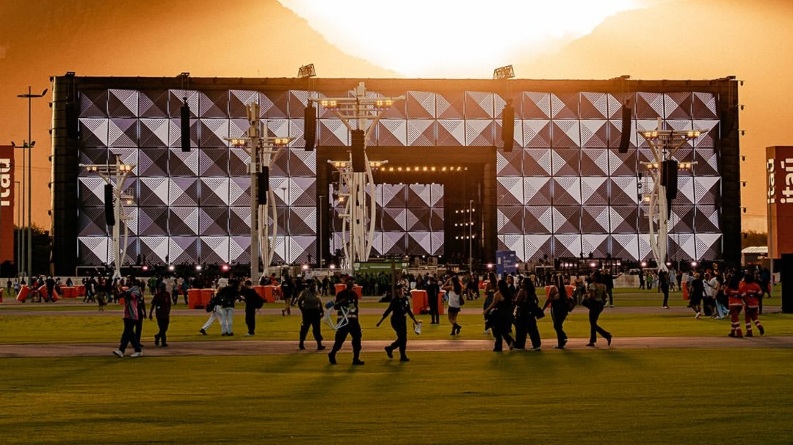
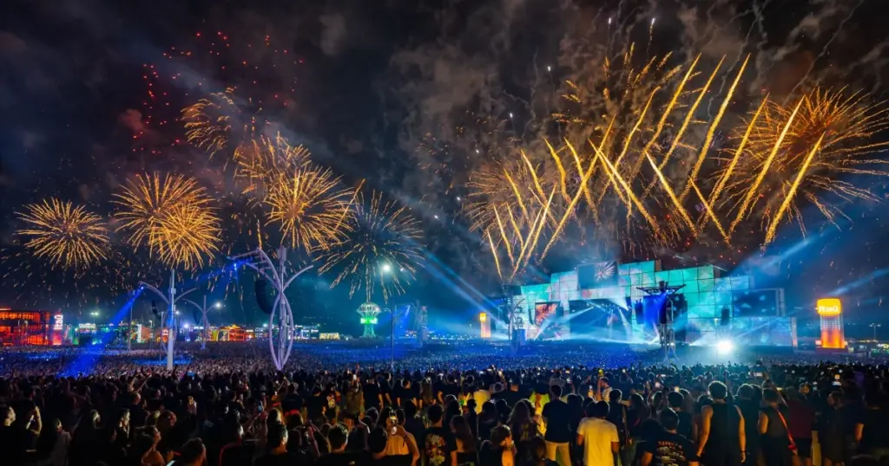

Ser considerado um dos festivais mais prestigiados de música e patrimônio imaterial do Rio de Janeiro não abalou a escolha dos organizadores quando o papo é jogada publicitária.
Tendo início nesta sexta, o evento marca com seu setlist voltado ao rock n' roll de verdade, prometendo bons momentos com grandes bandas e diversificando — ao menos nesta primeira noite — aquilo que entrega nos últimos anos.
Com uma apresentação impecável, Foo Fighters fecha o primeiro dia com a certeza que sua presença será guardada com carinho, assim como todos os que compuseram uma data tão excepcional.
Mas será que realmente entregar dois dias de rock foi a escolha correta?
Com esse questionamento em mente, muitos internautas trouxeram suas indignações ainda durante a especulação do line up do evento, ao qual teve a informação da presença de Pearl Jam como um possível terceiro dia do rock, mas que logo veio a ser desmentida com o anúncio de atrações de outros estilos.
JOGADA PUBLICITÁRIA VS ROCK DE VERDADE
Entender o declínio no rock nacional é entender que grandes nomes já não representam aquilo que eram quando viveram sua era dourada.
O mercado nacional cada vez mais se molda ao que considera o gosto popular, deixando de lado minorias e desejos pessoais.
Um exemplo claro de jogada publicitária que causou grande revolta na comunidade do rock está diretamente relacionada à escolha de teor pessoal extremamente deplorável de influenciadores para cobrir os respectivos dias do RIR.
De acordo com alguns criadores de conteúdo, a presença de pessoas por conta de números e engajamento é só mais uma revelação infeliz de um festival que não se importa mais com sua própria essência, incapaz de abrir portas para quem realmente sabe o que está falando.
VALE A PENA VER O SHOW DO TELÃO?
Com impressionantes 2.400 m² de painéis de LED de altíssima definição, o Palco Mundo chama atenção do público, proporcionando uma verdadeira experiência visual.
Com apresentações como Elton John, Gilberto Gil, Foo Fighters, Ivete Sangalo, DJ Alok, Maroon 5, Black Eyed Peas, Nelly e Barão Vermelho, aqueles que forem à Cidade do Rock terão uma verdadeira experiência, uma vez que Elton John estará de volta após se despedir de turnês internacionais.

Em entrevista, Roberta Medina, vice-presidente executiva da Rock World, empresa produtora também dos festivais Rock in Rio, Rock in Rio Lisboa, The Town e Lollapalooza Brasil, afirmou:
“Certamente o que vai marcar esta edição é o Palco Mundo novo que vai ser uma forma da gente viver o impacto da tecnologia sempre privilegiando o humano, sempre de uma forma coletiva cantando junto em grande escala. Cada artista vai transformar o Palco Mundo em uma nova experiência.”
Complementando sobre as novas possibilidades da luz de LED como uma ferramenta que virou tendência entre os artistas em festivais, Medina continua:
“A beleza de trazer a tecnologia em um palco tão grande de LED é que cada artista vai construir o seu palco em termos de talento e criatividade. Dá muitas possibilidades. Acho que vai ser marcante para quem está assistindo. Adorei ver que o DJ Pedro Sampaio publicou um 'teaserzinho' e vai provocar muito a galera com isso. Bacana ver como cada um deles vai utilizar a tecnologia a seu favor.”
As declarações foram publicadas em matéria da Agência Brasil.
Traçando um paralelo entre sua fundação e atualidade, Roberta demonstra felicidade e otimismo quando o assunto é diversificar o atual público — mais uma vez um olhar publicitário e financeiro de alcançar e subsidiar um evento de grande magnitude.
A executiva afirma que Elton John trará um público que fundou o Rock in Rio e vai para celebrar e levar a família, mas que acolhe a banda Stray Kids de braços abertos, disposta a entender e acolher novos estilos em velhas estruturas.

ESTRUTURA DO ROCK IN RIO E SETLIST DO PRIMEIRO DIA
Fugindo das atrações principais, outros cinco palcos rodeiam o espaço, trazendo uma grande variedade de sons e estilos: Sunset, Espaço Favela, New Dance Order, Global Village e Supernova.
No Sunset tem Capital Inicial convida Dado Villa-Lobos, Hot Milk, Detonautas convidam Biquini e Di Ferrero, Jota Quest toca Tim Maia e BaianaSystem e Calema, entre outras atrações.
No Espaço Favela tem MC Rodrigo do CN, Hitmaker e GBZ7N, além de Xamã, Rael e Budah.
Este palco vai receber ainda Belo, Mart'nália e Tiee.
O New Dance Order recebe Steve Angello, GIU x Carola, Atkö e Cat Dealers, Meduza³, além de apresentações de Liu, Casa Bonita — Brisotti e Viot — e Sofi Tukker.
O Global Village recebe apresentações de Paulinho Moska, Leela, Giovanna Moraes, Mohamed Ramadan, Mãeana e Bento Gil convida Flor Gil, João Bosco, Joyce Moreno, Leila Pinheiro, Fernanda Takai e Wanda Sá.
O Supernova traz Diogo Defante, Venere Vai Venus, Rock in Gil com Larissa Luz e Chady, Blitzkrieg Psycho Bop — Ramones 50 Years — João Gordo & Asteroides Trio, Matanza Ritual, Bayside Kings e O Escritório.
SEGUNDO DIA DE EVENTO — 5 DE SETEMBRO
Palco Mundo
- 00h05 — Avenged Sevenfold
- 21h20 — Bring Me The Horizon
- 19h00 — MGK
- 16h40 — Sepultura
Palco Sunset
- 22h50 — Bad Omens
- 20h10 — Poppy
- 17h50 — Black Pantera convida Nervosa
- 15h30 — Malvada convida Day Limns
New Dance Order
- 01h30 — James Hype
- 00h00 — Volkoder
- 22h30 — Camina Jun x Eli Iwasa
- 21h05 — Victor Lou
Espaço Favela
- 19h10 — Major RD
- 16h50 — Canto Cego
- 15h00 — Quantum
Palco Supernova
- 20h10 — Supercombo
- 18h00 — Lvcas
- 16h00 — Mc Taya
- 14h30 — Zerobadass
Palco Global Village
- 19h10 — Korzus
- 16h50 — Noturnall + Russell Allen
- 15h00 — Rhegia